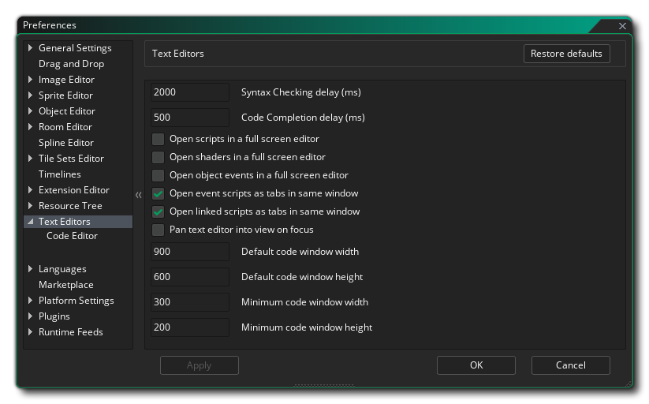

Les préférences des éditeurs de texte sont utilisées pour définir l'apparence et le comportement des différents éditeurs de code / script. La page principale a les options suivantes:
- Délai de vérification de la syntaxe (ms) - Délai (en millisecondes) avant l'exécution du vérificateur de syntaxe. Cette valeur par défaut est 2000ms.
- Délai d'achèvement de code (ms) - Le délai (en millisecondes)
- Ouvrir des scripts dans l'éditeur plein écran - Cocher cette option rendra les ressources de script ouvertes automatiquement dans un nouvel espace de travail. Si cette case n'est pas cochée, ils s'ouvriront dans une fenêtre de l'espace de travail en cours. Cette option est décochée par défaut.
- Ouvrir les shaders en mode plein écran - Cochez cette option pour que les ressources shader s'ouvrent automatiquement dans un nouvel espace de travail. Si cette case n'est pas cochée, ils s'ouvriront dans une fenêtre de l'espace de travail en cours. Cette option est décochée par défaut.
- Ouvrir les événements d'objets dans l'éditeur plein écran - Cocher cette option rendra les éditeurs de code d'événement d'objet ouverts automatiquement dans un nouvel espace de travail. Si ce n'est pas coché, ils s'ouvriront dans une fenêtre chaînée à l'éditeur d'événements d'objets. Cette option est décochée par défaut.
- Ouvrir des scripts d'événement sous forme d'onglets dans la même fenêtre - Lors de l'ajout de code ou d'un glisser-déposer à un événement, la fenêtre de code est chaînée à la fenêtre d'événement et lorsque cette option est cochée fenêtre en tant qu'onglets le long du haut. Si vous ne cochez pas cette option, chaque événement s'ouvrira en tant que fenêtre chaînée unique. Cette option est cochée par défaut.
- Ouvrir des scripts liés sous forme d'onglets dans la même fenêtre - Lorsque vous avez plusieurs scripts liés et que vous les ouvrez, ils seront par défaut groupés dans la même fenêtre que les onglets. Décocher cette option les forcera à ouvrir chacun dans leur propre fenêtre / espace de travail. Cette option est cochée par défaut.
- L'éditeur de texte de panoramique dans la vue sur le foyer - Quand vous ouvrez un éditeur de texte d'un événement d'objet, sélectionnant cette option balayera automatiquement l'espace de travail pour amener l'éditeur à l'intérieur des limites. Cette option est désactivée par défaut.
- Largeur de la fenêtre de code par défaut - Définissez la largeur par défaut (en pixels) de la fenêtre de code à ouvrir. La valeur par défaut est 900.
- Hauteur de la fenêtre de code par défaut - Définit la hauteur par défaut (en pixels) de la fenêtre de code à ouvrir. La valeur par défaut est 600.
- Largeur minimale de la fenêtre de code - Définissez la largeur minimale (en pixels) autorisée par la fenêtre de code. La valeur par défaut est 300.
- Hauteur minimale de la fenêtre de code - Définissez la hauteur minimale (en pixels) autorisée par la fenêtre de code. La valeur par défaut est 200.
Outre les options ci-dessus, il existe également deux sous-catégories pour les préférences du code et de l'éditeur de dialogues (affichées ensemble ci-dessous car les préférences sont exactement les mêmes pour les deux):
Les préférences de couleur sont utilisées pour modifier la façon dont le code et l'éditeur de script affichent différents textes. Chaque entrée a un certain nombre de sous-entrées pour vous permettre de définir exactement comment chaque morceau de texte doit ressembler, comme indiqué dans l'image d'exemple ci-dessus. En général, vous pouvez définir la couleur, la police, la taille et le style pour chacune des différentes options. Plus bas, vous pouvez également définir un style plus général pour des choses comme la sélection de ligne de crochets de code, etc...
Sous les préférences de couleur, vous avez les différentes options de style. Ces préférences sont utilisées pour définir le comportement de l'éditeur de code / script, avec les options suivantes disponibles:
- Conserver les onglets: Si cette case est cochée, les touches de tabulation seront maintenues en tant que caractères de tabulation - '\ t' - dans l'éditeur, tandis que la case non cochée signifie que les onglets sont convertis en espaces. La valeur par défaut est désactivée.
- Taille de l'onglet: Le nombre d'espaces de caractères que vous appuyez sur "Tab" devrait indenter le code. La valeur par défaut est 4.
- Afficher les espaces: afficher "." pour montrer les espaces (voir l'image ci-dessous). La valeur par défaut est désactivée.
- Afficher les numéros de ligne: Indique si les numéros de ligne doivent être affichés sur la gauche ou non. La valeur par défaut est activée.
- Afficher les lignes d'onglet: affiche "...." pour afficher l'espace des onglets. La valeur par défaut est désactivée.
- Activer le codage couleur: activez ou désactivez le codage couleur pour l'éditeur. Si elle est désactivée, le code ne sera pas stylé, tandis que lorsqu'il sera activé, il sera stylisé en utilisant la mise en forme donnée ci-dessus dans la section Couleur. La valeur par défaut est activée.
- Limite de ligne de document: définissez le nombre maximal de lignes pour un document d'éditeur donné. La valeur par défaut est 0 (0 ou moins est essentiellement infini) et toute autre valeur limitera les lignes autorisées.
- Correspondance indentation sur les nouvelles lignes: Activez ou désactivez l'indentation automatique pour votre code. La valeur par défaut est activée, ce qui permet de conserver les onglets définis sur une ligne lorsqu'une nouvelle ligne est ajoutée.
- Retrait automatique après accolade: Activez ou désactivez l'auto-indentation pour votre code lors de l'ajout d'accolades {}. La valeur par défaut est activée, ce qui va tabuler la ligne de code suivante lorsqu'une nouvelle accolade {et une nouvelle ligne sont ajoutées.
- Activer l'achèvement du code: Activer ou désactiver la fenêtre d'achèvement du code. Lorsque vous écrivez du code et que celui-ci est activé, vous obtenez une fenêtre contextuelle montrant les fonctions possibles que vous pouvez utiliser en fonction du texte d'entrée actuel. La valeur par défaut est activée.
- Ajout automatique de parenthèses de fonction: Activer ou désactiver l'ajout automatique de parenthèses () lorsque vous utilisez la saisie semi-automatique. Lors de l'écriture de code et que celle-ci est activée, l'EDI ajoute automatiquement les deux crochets () qu'une fonction requiert, en plaçant le curseur à l'intérieur si la fonction prend des arguments ou en plaçant le curseur après eux. Cette fonctionnalité ne fonctionne que lorsque la fonction a été sélectionnée à partir de la saisie semi-automatique. La valeur par défaut est activée.
- Undo / Redo Stack Limit: Ici, vous pouvez définir la limite de pile Undo / Redo. Tout ce qui est inférieur à 0 est essentiellement infini (limité par la mémoire disponible) tandis que les valeurs positives limiteront la pile à ce nombre, supprimant toute action à la fin de la pile si la limite est atteinte. La valeur par défaut est -1.
- Mettre en évidence les correspondances de sélection: cela mettra en surbrillance toute section de code dupliquée ailleurs. Ainsi, si vous sélectionnez une fonction, par exemple, toutes les instances de cette fonction dans la fenêtre de code actuelle seront également mises en surbrillance. La valeur par défaut est activée.
- Codage couleur / achèvement de code pour les fonctions obsolètes: Cela mettra en évidence toute section de code qui est obsolète. La valeur par défaut est activée.